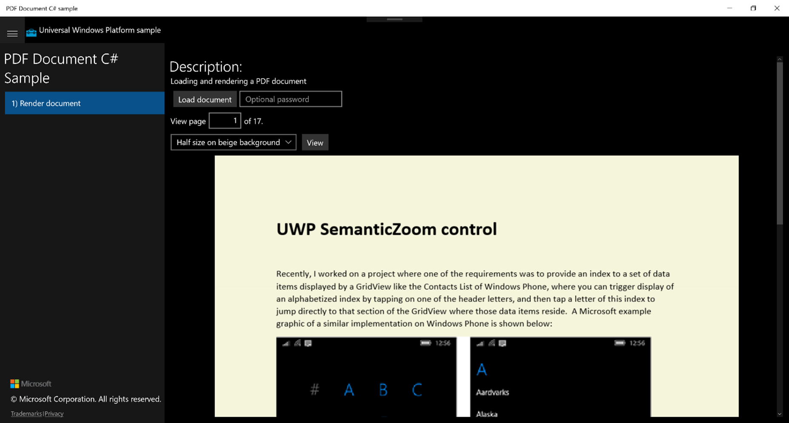
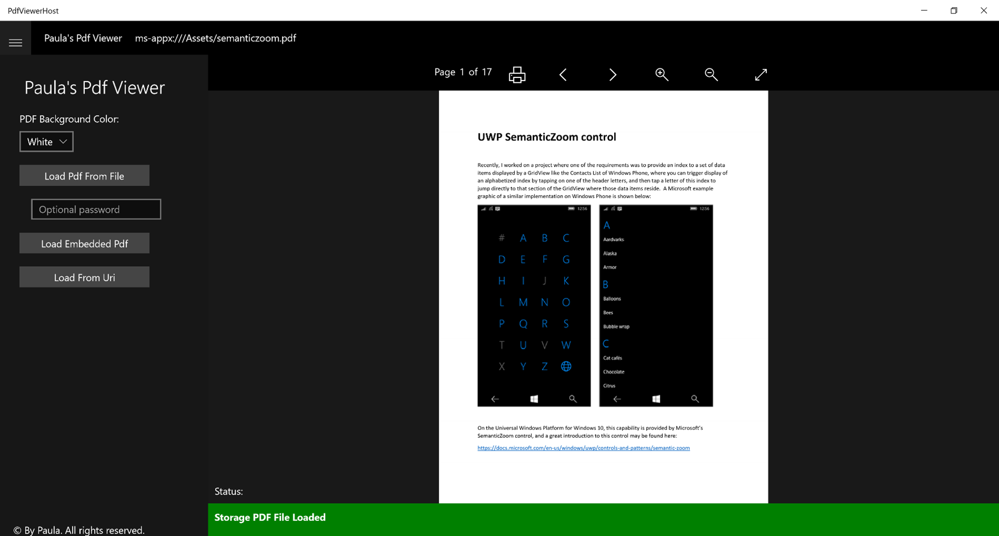
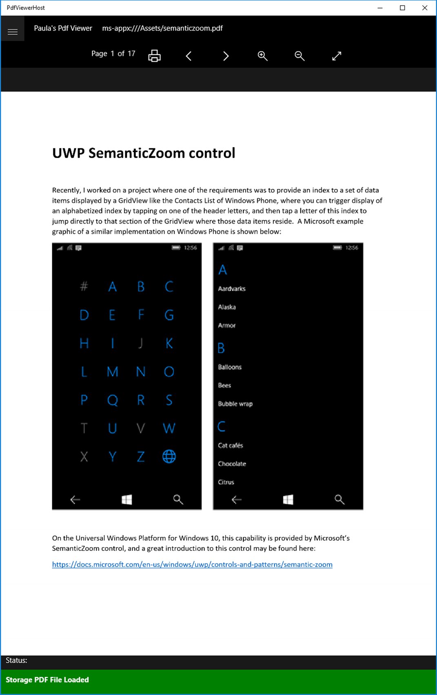
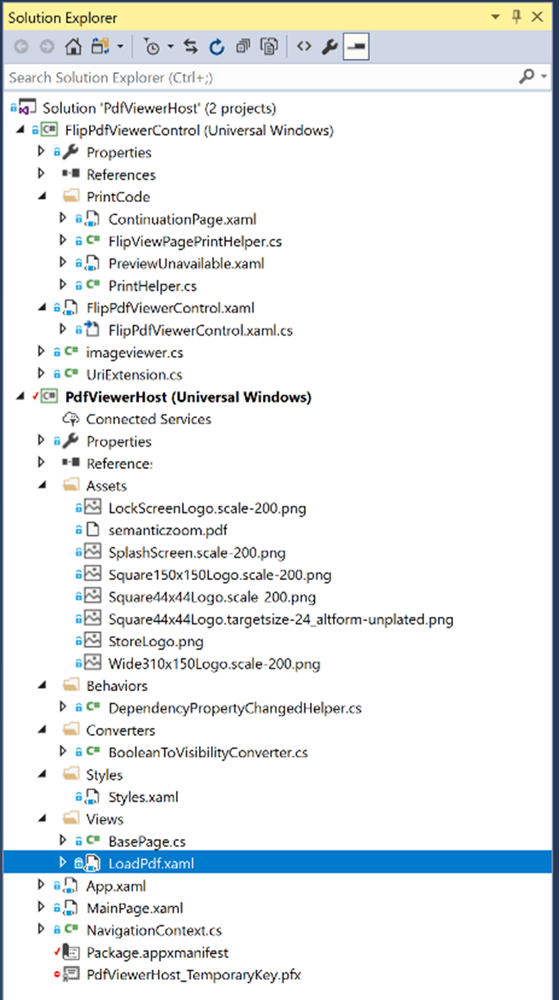

PDFViewerHost and the FlipPdfViewerControl by Paula Scholz
Introduction
Recently, for a Universal Windows Platform (UWP) C# project, I was asked to implement Adobe PDF viewing capability for small PDF files that would be attached as part of a user record. The requirements did not involve creating any PDF files, or filling out PDF Forms, or anything more complicated than viewing the PDF file pages in the user interface, and then printing them on demand. Also, in the same display space, we would need to display individual image files that might be attached to the record, like pictures of people or buildings, or scans of other documents that were not PDF files.
As always, I searched the Web for projects that might implement some aspects of the requirements that I could use as springboard for development. There were lots of commercial PDF viewers out there, but almost all were part of some overall control toolkit that cost a lot of money and came with limiting license restrictions, none of which we could live with.
But one article stood out from the rest and presented a very simple PDF viewer control that looked promising. Pieter Nijs of Belgium made a great little GitHub project that uses the Windows.Data.Pdf.PdfDocument class to render a PDF file inside a UWP application, and I thought this a great point of departure for my own work. His article shows how to download a PDF file over the Internet or from the file system and open it as a Windows.Data.Pdf.PdfDocument object, rendering pages from that document inside a ScrollViewer control. This article may be found here:
https://blog.pieeatingninjas.be/2016/02/06/displaying-pdf-files-in-a-uwp-app/
Also, Microsoft had thoughtfully provided their own PDF sample project as part of their Windows Universal Samples offering to Windows 10 developers. This sample provided some extra features over Pieter’s offering, like background color rendering, passwords, and error reporting, but like most Microsoft samples was not really useful as a component for my own project. The sample was more of a teaching tool, showing developers how to use features of the PDF API rather than providing a plug-in solution for your own development. Still, it was very useful and provided some great nuggets of functionality for my own efforts. This sample may be found here:
https://github.com/Microsoft/Windows-universal-samples/tree/master/Samples/PdfDocument
A screenshot of the Microsoft sample in action will prove instructive:

The sample consists of a MainPage containing a SplitView control, and you can see this in the screenshot. On the left pane area is a title and a single option to “Render document”, and in the SplitView’s main content area are controls to select a document to load from the file system, optional Password box, a TextBox where you can enter the page number you wish to view, a ComboBox allowing you to select options to render the page at full size, half size on beige background, or cropped to the center of the page. Once your file, page, and options are selected, you press the View button to render your page in the remaining content area. Here, we see a PDF version of my SemanticZoom control tutorial rendered at half size on a beige background as a Windows.UI.Xaml.Media.Imaging.BitmapImage.
The Windows.Data.Pdf.PdfPage object only renders the page as a Stream of data with its PdfPage.GetPage(int pageIndex) method, but this can be set as the source of a BitmapImage to turn into something that can be rendered in a UWP user interface, and that is the only technique Microsoft provides to get PDF pages from a document. This provides limited capability, but we can use it to view PDF pages, albeit without the ability to select individual blocks of text or manipulate that text in any way except size, rotation, or background color. Still, it is enough to provide a useful control for viewing PDF documents in a UWP application without paying large fees to a control vendor. I guess Microsoft wanted to leave a little room in its ecosystem for the many add-on control framework vendors like Symantec, Infragistics, ActiPro and others, while still providing something useful to the millions of individual developers writing for the Microsoft platform.
PdfViewerHost Project
So, between these two projects, fruits of some of my previous work, and a little of my own magic, I decided to roll my own UWP UserControl, and because I needed a project to host it, I decided to more or less mirror the structure of a Microsoft sample. We’ll look at these from the outside-in, like layers of an onion. Below is our outer layer, the Paula PDF Viewer application, called PdfViewerHost.exe.

Like the Microsoft samples, I’ve divided the application with a SplitView control. In the left pane, there is a ComboBox, three buttons, and an optional Password box. These buttons, and the code behind them, illustrate the various PDF sources the control can load, to wit:
· PDF files located on the file system in Documents or other folders.
· PDF files embedded as a resource in the application (shown above)
· PDF files downloaded over the Internet
The Hamburger button at the top of the left pane will collapse the SplitView pane, leaving only the content host page and its FlipPdfViewerControl visible. The collapsed view maximizes the screen real-estate devoted to the actual document and is important when viewing the application on a monitor in Portrait mode, like this:

At the top of the application, we show the source of the loaded PDF file, in this case, an embedded file located in the Assets directory of the application on disk, and at the bottom we have a Status area that shows status and error messages forwarded from the control to its host page, and then to the MainPage, where the Status bar resides.
The control itself does not have any visible controls other than the PDF file content area, which is a FlipView. The page indicator, printer button, FlipView navigation and image zoom controls are part of the controls’ host page and their click event handlers call methods on the control. Let’s look at the Solution Explorer of the application’s source code in Visual Studio:

We have two projects, the PdfViewerHost application, which provides the shell, controls for loading PDF files, and controls that manipulate the PDF viewer; and the FlipPdfViewerControl, which is what actually decodes and displays the PDF files inside a FlipView control. Let’s look at these projects in detail.
The PdfViewerHost has a standard App.Xaml page, where we declare a single Resource Dictionary of control styles, a MainPage containing the shell of the application and the PDF file loading controls, a simple NavigationContext object for passing PDF file parameters to the single LoadPdf.xaml page (which has our PDF viewer controls) inside the Views folder, a single Converter for hooking changes in Dependency Properties, the ubiquitous BooleanToVisibilityConverter for our XAML pages, a Style.xaml page with visual styles for the controls, a BasePage.cs file as the INotifyPropertyChanged base class of LoadPdf.xaml, an Assets folder with Windows Store logos and an embedded PDF file, semanticzoom.pdf. There are also some Visual Studio housekeeping files, the Package.appxmanifest and temporary development key for the Windows 10 app container.
Let’s look at MainPage.xaml
<Page
x:Class="PdfViewerHost.MainPage"
xmlns="http://schemas.microsoft.com/winfx/2006/xaml/presentation"
xmlns:x="http://schemas.microsoft.com/winfx/2006/xaml"
xmlns:d="http://schemas.microsoft.com/expression/blend/2008"
xmlns:mc="http://schemas.openxmlformats.org/markup-compatibility/2006"
mc:Ignorable="d">
<!-- The structure of this page is taken directly from a Microsoft sample. -->
<Grid Background="{ThemeResource ApplicationPageBackgroundThemeBrush}">
<Grid.RowDefinitions>
<RowDefinition Height="Auto"/>
<RowDefinition Height="*"/>
</Grid.RowDefinitions>
<!-- This SplitView has the main controls for the app for loading PDF files, either from an embedded PDF file,
a URI from the Internet, or from a PDF file on the file system. See MainPage.xaml.cs click event handlers
for how each type is handled in your own programs. -->
<SplitView x:Name="Splitter" IsPaneOpen="True" Grid.Column="1" DisplayMode="Inline" Grid.Row="1">
<SplitView.Pane>
<RelativePanel Margin="10,0,0,0">
<StackPanel Orientation="Vertical" Margin="10">
<TextBlock x:Name="SampleTitle" Text="Paula's Pdf Viewer" Style="{StaticResource SampleHeaderTextStyle}" TextWrapping="Wrap" Margin="20"/>
<!-- The background color choices for the rendered PDF document. These can be changed to whatever you want. -->
<StackPanel Orientation="Vertical">
<TextBlock Text="PDF Background Color:" Style="{StaticResource BasicTextStyle}" VerticalAlignment="Center" Margin="10,0,0,0" />
<ComboBox x:Name="ColorOptions" SelectedIndex="0" Margin="10">
<ComboBoxItem>White</ComboBoxItem>
<ComboBoxItem>Wheat</ComboBoxItem>
<ComboBoxItem>Corn Silk</ComboBoxItem>
<ComboBoxItem>Ivory</ComboBoxItem>
<ComboBoxItem>Light Gray</ComboBoxItem>
<ComboBoxItem>Floral White</ComboBoxItem>
</ComboBox>
</StackPanel>
<!-- The various options for loading PDF files. The LoadButton PDF option has an optional PasswordBox
for password-protected PDF files. -->
<Button x:Name="LoadButton" Width="200" VerticalAlignment="Top" Content="Load Pdf From File" Click="{x:Bind LoadDocument}" Margin="10 "/>
<PasswordBox x:Name="PasswordBox" Width="200" Height="25" PlaceholderText="Optional password" VerticalAlignment="Top" Margin="10"/>
<Button x:Name="LoadFromAssets" Width="200" Content="Load Embedded Pdf" Click="LoadFromAssets_Click" VerticalAlignment="Top" Margin="10"/>
<Button x:Name="LoadFromUri" Width="200" Content="Load From Uri" Click="LoadFromUri_Click" VerticalAlignment="Top" Margin="10" />
</StackPanel>
<!-- This footer panel taken directly from a Microsoft sample. -->
<StackPanel x:Name="FooterPanel" Orientation="Vertical" RelativePanel.AlignBottomWithPanel="True">
<!-- This just shows how to display the Copyright symbol. You can do with this whatever you want. -->
<TextBlock x:Name="Copyright" Text="© By Paula. All rights reserved." Style="{StaticResource CopyrightTextStyle}"
RelativePanel.Above="LinksPanel" Margin="10,10,0,0"
TextWrapping="Wrap"/>
</StackPanel>
</RelativePanel>
</SplitView.Pane>
<RelativePanel>
<!-- This Frame contains the FlipPdfViewer control, navigated to by the Button click-event handlers, above. -->
<Frame x:Name="PdfFrame" Margin="0,5,0,0" RelativePanel.AlignTopWithPanel="True" RelativePanel.Above="StatusPanel" RelativePanel.AlignRightWithPanel="True" RelativePanel.AlignLeftWithPanel="True"/>
<!-- This contains the Status panel, used to display status and error messages from the application. -->
<StackPanel x:Name="StatusPanel" Orientation="Vertical" RelativePanel.AlignBottomWithPanel="True" RelativePanel.AlignRightWithPanel="True" RelativePanel.AlignLeftWithPanel="True">
<TextBlock x:Name="StatusLabel" Margin="10,0,0,10" TextWrapping="Wrap" Text="Status:" />
<Border x:Name="StatusBorder" Margin="0,0,0,0">
<ScrollViewer VerticalScrollMode="Auto" VerticalScrollBarVisibility="Auto" MaxHeight="200">
<TextBlock x:Name="StatusBlock" FontWeight="Bold"
MaxWidth="{Binding ElementName=Splitter, Path=ActualWidth}" Margin="10,10,10,20" TextWrapping="Wrap" />
</ScrollViewer>
</Border>
</StackPanel>
</RelativePanel>
</SplitView>
<!-- This has the Header panel at the top of the document, with the Hamburger button used to toggle visibility of
the Frame containing the FlipPdfViewer control. -->
<StackPanel x:Name="HeaderPanel" Orientation="Horizontal">
<Border Background="{ThemeResource SystemControlBackgroundChromeMediumBrush}" Grid.Row="0">
<ToggleButton Style="{StaticResource SymbolButton}" Click="Button_Click" VerticalAlignment="Top" Foreground="{ThemeResource ApplicationForegroundThemeBrush}">
<ToggleButton.Content>
<FontIcon x:Name="Hamburger" FontFamily="Segoe MDL2 Assets" Glyph="" Margin="0,10,0,0"/>
</ToggleButton.Content>
</ToggleButton>
</Border>
<StackPanel Orientation="Horizontal">
<TextBlock x:Name="Header" Text="Paula's Pdf Viewer" Style="{StaticResource TagLineTextStyle}" Margin="20,15,0,0" />
<!-- This displays the name of the PDF file currently in the FlipPdfViewer control. -->
<TextBlock x:Name="SourceHeader" Text="{x:Bind SourceDisplayName, Mode=OneWay}" Style="{StaticResource TagLineTextStyle}" Margin="20,15,0,0" />
</StackPanel>
</StackPanel>
</Grid>
</Page>
We’re not going to go into a lot of detail on this page, which hosts the header and footer area. The main part of the page holds the SplitView control, dividing the page into a collapsible SplitView.Pane, and a content area represented by a RelativePanel. The most important aspect of the content area is the <Frame> control, which is used to navigate to the LoadPdf page inside the SplitView’s content area through the button click handlers referenced in the <Button> controls in the SplitView.Pane. Let’s look at those click handlers inside MainPage.xaml.cs. There are three of them:
/// <summary>
/// Launch the FileOpenPicker and get the name of a PDF document to load. This is
/// an async method because it awaits an async method, but it doesn't return a
/// Task so it can match the click handler signature.
/// </summary>
private async void LoadDocument()
{
LoadButton.IsEnabled = false;
var picker = new FileOpenPicker();
picker.FileTypeFilter.Add(".pdf");
StorageFile file = await picker.PickSingleFileAsync();
// if the FileOpenPicker gave us a filename, create a NavigationContext object
// and set its parameters to pass to the LoadPdf page.
if (null != file)
{
var nav = new NavigationContext();
nav.IsFile = true;
nav.PdfFile = file;
nav.BackgroundColor = GetPdfBackgroundColor();
// update the displayed loaded PDF name
SourceDisplayName = file.Name;
// navigate to the LoadPdf page
PdfFrame.Navigate(typeof(Views.LoadPdf), nav);
}
LoadButton.IsEnabled = true;
}
/// <summary>
/// This loads an embedded PDF file from the Assets directory. Remember, any PDF file
/// you want to load from Assets has to have its Build Action set to Content in Properties.
/// </summary>
/// <param name="sender"></param>
/// <param name="e"></param>
private void LoadFromAssets_Click(object sender, RoutedEventArgs e)
{
var uri = new Uri("ms-appx:///Assets/semanticzoom.pdf");
var nav = new NavigationContext();
nav.IsFile = false;
nav.PdfUri = uri;
nav.BackgroundColor = GetPdfBackgroundColor();
// update the displayed loaded PDF name
SourceDisplayName = uri.ToString();
// navigate to the LoadPdf page
PdfFrame.Navigate(typeof(Views.LoadPdf), nav);
}
/// <summary>
/// This loads a PDF file from an Internet URI.
/// </summary>
/// <param name="sender"></param>
/// <param name="e"></param>
private void LoadFromUri_Click(object sender, RoutedEventArgs e)
{
var uri = new Uri("http://www.adobe.com/content/dam/Adobe/en/accessibility/products/acrobat/pdfs/acrobat-x-accessible-pdf-from-word.pdf");
var nav = new NavigationContext();
nav.IsFile = false;
nav.PdfUri = uri;
nav.BackgroundColor = GetPdfBackgroundColor();
// update the displayed loaded PDF name
SourceDisplayName = uri.ToString();
// navigate to the LoadPdf page
PdfFrame.Navigate(typeof(Views.LoadPdf), nav);
}
The first of these, LoadDocument(), is the handler for the LoadButton in the SplitView.Pane. Pressing the button executes the click handler and launches a FilePicker, allowing the user to navigate the file system and choose a PDF document to load from the available choices on his system. Once chosen, we create a NavigationContext object and set its properties from the file chosen and then pass it as a parameter in the PdfFrame.Navigate method, which will then place the LoadPdf page into the frame.
The second click handler sets up a NavigationContext object with a URI representing our embedded PDF file, and the third click handler does something similar with an Internet URI of an Adobe PDF file located on the web. Both these click handlers then tell the Frame to navigate to LoadPdf.xaml passing the created NavigationContext.
Let’s look at the NavigationContext object code:
/// <summary>
/// The parameters for navigating PDF viewer display pages. Used by MainPage.xaml.cs click-event handlers.
/// </summary>
class NavigationContext
{
/// <summary>
/// Flag to indicate if this NavigationContext represents a
/// StorageFile or Uri location.
/// </summary>
public bool IsFile { get; set; } = false;
/// <summary>
/// The StorageFile representing the PDF file to load.
/// </summary>
public StorageFile PdfFile { get; set; }
/// <summary>
/// The Uri where a remote PDF file may be found and loaded.
/// </summary>
public Uri PdfUri { get; set; }
/// <summary>
/// The Windows.UI.Color for the background when rendering the PDF file.
/// </summary>
public Color BackgroundColor { get; set; }
}
As you can see, it’s a very simple object and gets passed to the LoadPdf.xaml.cs function OnNavigatedTo(NaviationEventArgs e) method when that page loads, as its NavigationEventArgs parameter. Note that the background color selected in the PDF Background Color ComboBox is also passed to this function, and the FlipPdfViewerControl on the LoadPdf.xaml page will use that color as the background color of the PDF file it renders.
Let’s look at the XAML of the LoadPdf.xaml page:
<local:BasePage
x:Class="PdfViewerHost.Views.LoadPdf"
xmlns="http://schemas.microsoft.com/winfx/2006/xaml/presentation"
xmlns:x="http://schemas.microsoft.com/winfx/2006/xaml"
xmlns:local="using:PdfViewerHost.Views"
xmlns:pdf="using:FlipPdfViewerControl"
xmlns:d="http://schemas.microsoft.com/expression/blend/2008"
xmlns:mc="http://schemas.openxmlformats.org/markup-compatibility/2006"
mc:Ignorable="d">
<Page.Resources>
<local:BooleanToVisibilityConverter x:Key="BooleanToVisibilityConverter" />
</Page.Resources>
<!-- This page is instantiated by the Frame on the MainPage in response to a button click event loading a Pdf file. -->
<Grid Background="{ThemeResource ApplicationPageBackgroundThemeBrush}">
<!-- These provide the visual controls for the FlipPdfViewer user control. The buttons trigger event handlers which
pass on the events to that control, and the TextBlocks are fed by DependencyProperties on that control. -->
<StackPanel Orientation="Horizontal" VerticalAlignment="Top" HorizontalAlignment="Center" Margin="0,10,0,10">
<TextBlock Text="Page"
FontSize="{x:Bind TextSize, Mode=OneWay}"
Margin="20,0,6,0"
VerticalAlignment="Top" />
<!-- The CurrentPageNumber displayed in the FlipPdfViewer user control. -->
<TextBlock Text="{x:Bind FlipPdfViewer.CurrentPageNumber, Mode=OneWay}"
FontSize="{x:Bind TextSize, Mode=OneWay}"
VerticalAlignment="Top"
Margin="0,0,6,0" />
<TextBlock Text="of"
Margin="0,0,6,0"
FontSize="{x:Bind TextSize, Mode=OneWay}"
VerticalAlignment="Top" />
<!-- The PageCount of the current PDF document in the FlipPdfViewer user control. -->
<TextBlock Text="{x:Bind FlipPdfViewer.PageCount, Mode=OneWay}" Margin="0,0,6,0"
FontSize="{x:Bind TextSize, Mode=OneWay}"
VerticalAlignment="Top" />
<!-- The Print button for the contents of the FlipPdfViewer. -->
<Button Click="OnPrintButtonClick"
Background="Transparent"
Style="{StaticResource ToolButtonStyle}"
HorizontalAlignment="Left"
Margin="8,0"
Padding="12,3"
Visibility="{x:Bind PrintingIsSupported, Converter={StaticResource BooleanToVisibilityConverter}}">
<TextBlock Text=""
VerticalAlignment="Center"
Style="{StaticResource IconStyleLarge}" />
</Button>
<!-- A Navigation button to move to the previous Pdf page. The glyph is from the Segoe MLD2 Assets, a
cheatsheet for which may be found here: http://modernicons.io/segoe-mdl2/cheatsheet/ -->
<Button Click="MoveFlipViewBack"
Style="{StaticResource FlipViewControlButtonStyle}">
<TextBlock Text=""
VerticalAlignment="Center"
Style="{StaticResource IconStyle}" />
</Button>
<!-- A Navigation button to move to the next Pdf page. -->
<Button Click="MoveFlipViewForward"
Style="{StaticResource FlipViewControlButtonStyle}">
<TextBlock Text=""
VerticalAlignment="Center"
Style="{StaticResource IconStyle}" />
</Button>
<!-- A button to trigger zooming in on the current Pdf page. -->
<Button Click="ZoomIn"
Style="{StaticResource FlipViewControlButtonStyle}">
<TextBlock Text=""
VerticalAlignment="Center"
Style="{StaticResource IconStyle}" />
</Button>
<!-- A button to trigger zooming out on the current Pdf page. -->
<Button Click="ZoomOut"
Style="{StaticResource FlipViewControlButtonStyle}">
<TextBlock Text=""
VerticalAlignment="Center"
Style="{StaticResource IconStyle}" />
</Button>
<!-- A button to trigger the resize to normal of the current Pdf page. -->
<Button
Style="{StaticResource FlipViewControlButtonStyle}"
Click="DoFitDocumentImageToScreen">
<TextBlock Text=""
VerticalAlignment="Center"
Style="{StaticResource IconStyle}" />
</Button>
</StackPanel>
<!-- This grid encloses the FlipPdfViewerControl -->
<Grid x:Name="FlipPdfViewContainer" VerticalAlignment="Bottom" Margin="0,50,0,-50">
<!-- The actual PDF user control, which uses a FlipView to page through the PDF pages. -->
<pdf:FlipPdfViewerControl x:Name="FlipPdfViewer"
HorizontalAlignment="Stretch"
VerticalAlignment="Stretch"
Source="{x:Bind PdfSource, Mode=OneWay}"
IsZoomEnabled="true"/>
</Grid>
<!-- This progress ring hasn't been hooked up yet, so don't freak out. -->
<ProgressRing x:Name="ProgressControl" Height="50" Width="50" IsActive="False" Visibility="Collapsed" Margin="0,10,0,0"/>
</Grid>
</local:BasePage>
This page acts as a host and visual control wrapper for the actual FlipPdfViewerControl that renders the PDF document. Note that instead of being derived directly from Page, it is derived from BasePage, which itself is derived from Page and the INotifyPropertyChanged interface. BasePage is very simple and simply implements the required members of INotifyPropertyChanged in order to provide change notifications for simple .Net properties that are not Dependency Properties. We don’t happen to have any Dependency Properties in LoadPdf.xaml.cs, although there are a lot of them in the FlipPdfViewerControl.
Really, all we have here on LoadPdf.xaml are some buttons that wrap the FlipPdfViewerControl’s action methods, and the FlipPdfViewerControl itself.
Let’s look at the most important method in LoadPdf.xaml.cs, the OnNavigatedTo(NaviationEventArgs e) method:
/// <summary>
/// Triggered by the MainPage's PdfFrame.Navigate calls in the various Button
/// event handlers for loading Pdf documents from embedded PDF files, the file system,
/// or an Internet URI.
/// </summary>
/// <param name="e">NavigationEventArgs, a NavigationContext object.</param>
protected override void OnNavigatedTo(NavigationEventArgs e)
{
base.OnNavigatedTo(e);
// cast the passed parameter as a NavigationContext object
var parameters = e.Parameter as NavigationContext;
SizeChanged += LoadPdf_SizeChanged;
// if we actually have a NavigationContext object passed...
if(null != parameters)
{
// set the FlipPdfViewer's background color before rendering
FlipPdfViewer.PdfBackgroundColor = parameters.BackgroundColor;
bool isFile = parameters.IsFile;
// if the passed NavigationContext is a StorageFile
if (isFile)
{
StorageFile pdfFile = parameters.PdfFile;
// Open the Pdf file through the FlipPdfViewer's StorageFileSource
// property directly. This will trigger loading the PDF file.
FlipPdfViewer.StorageFileSource = pdfFile;
ForwardStatusMessage("Opening PDF File from Storage");
}
else
{
// It's not a file but a Uri, so set our Uri property,
// bound to the FlipPdfViewer in XAML, which will trigger
// loading the PDF file.
PdfSource = parameters.PdfUri;
}
PrintingIsSupported = FlipPdfViewer.PrintingIsSupported;
// set forward message delegate instances
FlipPdfViewer.HostStatusMsgHandler = ForwardStatusMessage;
FlipPdfViewer.HostErrorMsgHandler = ForwardErrorMessage;
// if the FlipPdfViewer supports printing, register it with the print system. We do this here
// so it can be unregisterd in OnNavigatedFrom.
if (PrintingIsSupported)
{
// register FlipPdfViewer for printing
FlipPdfViewer.RegisterForPrinting();
}
}
}
After calling the base class function, we decode the passed parameter as a NavigationContext object and examine it. If it represents the choice of a StorageFile, we assign the file to the FlipPdfViewerControl’s StorageFileSource Dependency Property and that properties’ change callback method will load the file, decode the first page, and display that page in the control’s FlipView. If the NavigationContext object represents a URI, either from the web or from a PDF file embedded in the application’s Assets folder, we take that URI and assign it to the FlipPdfViewerControl’s PdfSource Dependency Property, and the PDF file will be loaded from the URI, decoded, and its first page displayed.
We then set the LoadPdf.xaml page’s PrintingIsSupported property from the FlipPdfViewerControl’s property of the same name, and this will trigger the visibility of the Print button on the UI. Then, we hook up two simple functions that forward error and status messages to the MainPage’s status area, and then, if printing is supported, we call the FlipPdfViewerControl’s RegisterForPrinting() method, which does exactly as it says it does, and registers the control with the Windows 10 print system.
The OnNavigatedFrom(NavigationEventArgs e) override is quite simple, merely unregistering the FlipPdfViewerControl from the print system, and unhooking the Size_Changed event handler.
/// <summary>
/// When we leave the page, unregister the FlipPdfViewer from the print system.
/// </summary>
/// <param name="e">NavigationEventArgs, ignored here.</param>
protected override void OnNavigatedFrom(NavigationEventArgs e)
{
if(PrintingIsSupported)
{
FlipPdfViewer.UnRegisterForPrinting();
}
SizeChanged -= LoadPdf_SizeChanged;
}
The rest of the code-behind on this page is of little note, merely some .Net properties and click event handlers which forward events to the FlipPdfViewerControl.
FlipPdfViewerControl XAML
Now we turn our attention to the FlipPdfViewerControl code, which is the UserControl that actually displays PDF files and that you can include in your own programs. The Xaml code of the FlipPdfViewrControl is also quite simple. Let’s examine it in detail:
<UserControl
x:Class="FlipPdfViewerControl.FlipPdfViewerControl"
xmlns="http://schemas.microsoft.com/winfx/2006/xaml/presentation"
xmlns:x="http://schemas.microsoft.com/winfx/2006/xaml"
xmlns:local="using:FlipPdfViewerControl"
xmlns:d="http://schemas.microsoft.com/expression/blend/2008"
xmlns:mc="http://schemas.openxmlformats.org/markup-compatibility/2006"
mc:Ignorable="d"
d:DesignHeight="300"
d:DesignWidth="400"
x:Name="root">
<Grid>
<!-- This print canvas is a target of the printer code. -->
<Canvas x:Name="PrintCanvas" Opacity="0"/>
<FlipView Name="flipView"
VerticalAlignment="Center"
ItemsSource="{x:Bind PdfPages, Mode=OneWay}">
<FlipView.ItemTemplate>
<DataTemplate>
<local:ImageViewer x:Name="flipImageViewer" Source="{Binding}" />
</DataTemplate>
</FlipView.ItemTemplate>
</FlipView>
</Grid>
</UserControl>
Here, inside an enclosing Grid, we have a Canvas with opacity set to zero. This Canvas object functions as a target for the printing code and has no visual role in our control. Then, we have the control’s primary display object, the FlipView control, which has its items source set to the FlipPdfViewerControl’s PdfPages ObservableCollection<BitmapImage>.
ImageViewer Control
The FlipView.ItemTemplate contains a DataTemplate that describes how each BitmapImage in the FlipView is to be bound and rendered. Notice that instead of just a BitmapImage, the DataTemplate contains another control called the ImageViewer, and this control, derived from Grid, is what gives each BitmapImage in the PdfPages collection the ability to be zoomed independently. Let’s look at it:
/// <summary>
/// This object replaces the Scrollviewer/Image combination and presents the PDF
/// image at its actual aspect ratio, while allowing zoom.
/// </summary>
public class ImageViewer : Grid
{
public static readonly DependencyProperty SourceProperty = DependencyProperty.Register(
"Source", typeof(ImageSource), typeof(ImageViewer),
new PropertyMetadata(default(BitmapImage), SourceChangedCallback));
private ScrollViewer scroll;
private double imgActualWidth;
private double imgActualHeight;
private static int pixelWidth;
private static int pixelHeight;
private static float zoomChangeFactor = 0.2f;
private static void SourceChangedCallback(DependencyObject sender, DependencyPropertyChangedEventArgs args)
{
var control = sender as ImageViewer;
var source = args.NewValue as BitmapImage;
pixelWidth = source.PixelWidth;
pixelHeight = source.PixelHeight;
control.scroll = new ScrollViewer();
control.scroll.ZoomMode = ZoomMode.Enabled;
control.scroll.Name = "flipScrollViewer";
control.scroll.HorizontalScrollBarVisibility = ScrollBarVisibility.Auto;
control.scroll.VerticalScrollBarVisibility = ScrollBarVisibility.Auto;
var img = new Image
{
Source = source,
VerticalAlignment = VerticalAlignment.Center,
HorizontalAlignment = HorizontalAlignment.Center
};
img.Loaded += (o, eventArgs) =>
{
var ratioWidth = control.scroll.ViewportWidth / pixelWidth;
var ratioHeight = control.scroll.ViewportHeight / pixelHeight;
var zoomFactor = (ratioWidth >= 1 && ratioHeight >= 1)
? 1F
: (float)(Math.Min(ratioWidth, ratioHeight));
control.imgActualWidth = img.ActualWidth;
control.imgActualHeight = img.ActualHeight;
control.scroll.ChangeView(null, null, zoomFactor);
};
control.scroll.Content = img;
control.Children.Clear();
control.Children.Add(control.scroll);
}
public ImageSource Source
{
get { return (ImageSource)GetValue(SourceProperty); }
set { SetValue(SourceProperty, value); }
}
public void ZoomIn()
{
double horzOffset = 0;
double vertOffset = 0;
float newZoom = scroll.ZoomFactor + zoomChangeFactor;
// the pixel size of the content in the scrollviewer now
float scaledContentW = (float)imgActualWidth * newZoom;
float scaledContentH = (float)imgActualHeight * newZoom;
// if our content, scaled by the new zoom, is bigger than the viewport, adjust the scroll offset
if (scaledContentW < scroll.ViewportWidth)
{
horzOffset = 0;
}
else
{
horzOffset = (scaledContentW - scroll.ViewportWidth) / 2;
}
if (scaledContentH < scroll.ViewportHeight)
{
vertOffset = 0;
}
else
{
vertOffset = (scaledContentH - scroll.ViewportHeight) / 2;
}
scroll.ChangeView(horzOffset, vertOffset, newZoom);
}
public void ZoomOut()
{
double horzOffset = 0;
double vertOffset = 0;
float newZoom = scroll.ZoomFactor - zoomChangeFactor;
// the pixel size of the content in the scrollviewer now
float scaledContentW = (float)imgActualWidth * newZoom;
float scaledContentH = (float)imgActualHeight * newZoom;
// if our content, scaled by the new zoom, is bigger than the viewport, adjust the scroll offset
if (scaledContentW > scroll.ViewportWidth)
{
horzOffset = (scaledContentW - scroll.ViewportWidth) / 2;
}
else
{
horzOffset = 0;
}
if (scaledContentH > scroll.ViewportHeight)
{
vertOffset = (scaledContentH - scroll.ViewportHeight) / 2;
}
else
{
vertOffset = 0;
}
scroll.ChangeView(horzOffset, vertOffset, newZoom);
}
public void ZoomReset()
{
ImageReset();
}
private void ImageReset()
{
var ratioWidth = scroll.ViewportWidth / imgActualWidth;
var ratioHeight = scroll.ViewportHeight / imgActualHeight;
var zoomFactor = (ratioWidth >= 1 && ratioHeight >= 1)
? 1F
: (float)(Math.Min(ratioWidth, ratioHeight));
scroll.ChangeView(null, null, zoomFactor);
}
}
We see our ImageViewer control is derived from Grid, contains a Source dependency property with a changed callback method called SourceChangedCallback, a ScrollViewer control, some height and width variables, and a zoom variable. The ScrollViewer control provides the PDF Document’s pages rendered as BitmapImage objects zoom capability inside the FlipView, and the Microsoft documentation for the ScrollViewer control may be found here: https://docs.microsoft.com/en-us/uwp/api/Windows.UI.Xaml.Controls.ScrollViewer.
At binding time, each new FlipViewItem created from the PdfPages collection binds a single BitmapImage to the Source dependency property of the ImageViewer control in its ItemTemplate. When this happens, the Source dependency properties’ SourceChangedCallback method is called. In this rather complex method, we cast the passed arguments as an ImageViewer control and a BitmapImage, store the height and width of the BitmapImage in static variables (we have to use static variables because the SourceChangedCallback method is static), create a new ScrollViewer in code on the ImageViewer with the new operator and set its parameters. By setting the ScrollViewer’s ScrollBarVisibility to ScrollBarVisibility.Auto and its ZoomMode to ZoomMode.Enabled, we enable zooming in the ScrollViewer, either through touch actions on the screen or through code. We then create a new Image object, using the passed BitmapImage as the Source of the Image object.
Then, we do something rather tricky. We provide an anonymous event handler for the newly-created Image’s Loaded event, which will execute as soon as the Image object finishes loading the passed BitmapImage set as its Source. Inside this event handler, we compute the ratio of the Image’s static pixelWidth and pixelHeight variables to that of the ImageViewer control’s new ScrollViewer Viewportwidth and Viewportheight properties. If both ratioWidth and ratioHeight are greater than or equal to 1, meaning the ScrollViewer’s Viewport area is larger than the Image we’ve place in it, the ZoomFactor of the ScrollViewer is set as 1, otherwise it is set as the smaller of the two computed ratios.
We then assign the Image as the content of the ScrollViewer, save the static height and width of the Image in the control’s instance variables for these, and then call the control’s ScrollViewer.ChangeView method to set the zoom factor of the ScrollViewer. The ScrollViewer control has a cool built-in zoom animation as part of its default control template, so if the zoomFactor is less than 1, we’ll see a neat shrinking animation when each page is displayed in the FlipView.
The ImageViewer’s ZoomIn and ZoomOut methods are also a little tricky. While zooming in or out of an Image in the ScrollViewer through touch action, the control would use the center of your pinch action as the centroid of the zoom point, which was what I wanted. But, while doing it in code, the Image would always zoom into the top left-hand corner, and it drove me nuts looking on the web trying to find a solution to this problem. Seeing little useful in this research, I finally “bit the bullet”, as we say here in America, and decided to figure it out for myself. The solution turned out to be rather simple.
The ImageViewer class has a private zoomChangedFactor variable set at .2, which will increase or decrease the Zoom of the control’s ScrollViewer by that amount when ZoomIn or ZoomOut is called on it. We use this zoomChangedFactor to compute the newZoom factor each time, and then compute the new scaled size of our content. If this size is greater than the width or height of the ScrollViewer’s Viewport area, we simply compute a new horizontal or vertical offset for the ScrollViewer, thus keeping the Image centered in the ScrollViewer when we call the ScrollViewer ChangeView method. Really, very simple, and I’m surprised nobody on StackOverflow or a similar website has written about it because there are more than a few questions on this problem.
Finally, we have ImageReset(), which merely re-computes and sets the original zoomFactor and calls ChangeView accordingly to reset the Image to its original size in the ScrollViewer. Each of these methods is hooked to button event handlers in LoadPage.xaml.cs.
FlipPdfViewerControl Implementation
The key to implementing the FlipPdfViewerControl in your own code can be found in the LoadPage.xaml.cs OnNavigatedTo(NavigationEventArgs e) method. Essentially, the steps are:
· Declare an instance of the FlipPdfViewerControl in your host page’s Xaml and bind a Pdf file’s Uri to the Source property of the FlipPdfViewerControl. When Source, which represents a Uri of a PDF file on your computer or on the web, changes, it set in motion the sequence of operations to load and display the first page of that PDF file. In our LoadPdf.xaml example, we actually bind our FlipPdfViewerControl to a LoadPdf.xaml page property called PdfSource, which then sets the control’s Source property through binding.
· You don’t have to bind PdfSource if you don’t want to. Instead, you can set it in code-behind, or you can bind or set in code the FlipPdfViewerControl’s StorageFileSource property to a StorageFile on your file system. The StorageFileSource property is provided because the Windows 10 UWP FilePicker object provides a StorageFile reference, not a Uri.
· If you want to be able to zoom individual PDF pages in the control’s FlipView through its ImageViewer, set the IsZoomEnabled property to “true”.
· Set the desired background color for rendering PDF files by setting the control’s PdfBackgroundColor property with a Windows.UI.Color value.
· You can hook the PageCount and CurrentPageNumber properties to your own display elements by binding these properties on your host page, as we do in LoadPdf.xaml.
· You might want to provide FlipPdfViewerControl status or error messages to your own status reporting or logging system, as we’ve done in LoadPdf.xaml.cs, sending these messages to the Status area of the MainPage. If so, you need to set two delegates which implement this delegate pattern:
/// <summary>
/// An instance of this delegate should be supplied by the host UserControl to pass
/// error and other messages back to it.
/// </summary>
/// <param name="message"></param>
public delegate void NotifyHost(string message);
/// <summary>
/// Assign the host control's NotifyHost for Status to this variable
/// </summary>
public NotifyHost HostStatusMsgHandler;
/// <summary>
/// Assign the host control's NotifyHost for Errors to this variable
/// </summary>
public NotifyHost HostErrorMsgHandler;
You’ll get status and error messages sent to the methods you define for these.
FlipPdfViewerControl Printing
If you want to print a PDF document with the control, remember to register the control for printing. This is done in LoadPdf.xaml.cs OnNavigatedTo and the control is unregistered for printing in OnNavigatedFrom. It is important that you unregister if you register or an exception may occur. The printing code is taken almost entirely from a Microsoft printing sample, located here: https://github.com/Microsoft/Windows-universal-samples/tree/master/Samples/Printing. We used the Scenario 5 photo sample code, simply because all the PDF pages are rendered as BitmapImge objects. We modified the sample code a bit so we could call back status and error reporting methods on the FlipPdfViewerControl and set the number of pages, called NumberOfPhotos in the print code. This is done in PrintHelper.ShowPrintUIAsync, and registration of the print code with the FlipPdfViewerControl is done in the FlipViewPagePrintHelper’s constructor, like this:
public FlipViewPagePrintHelper(UserControl hostControl, NotifyHost hostStatusHandler = null, NotifyHost hostErrorHandler = null) : base(hostControl, hostStatusHandler, hostErrorHandler)
{
photoSize = PhotoSize.SizeFullPage;
photoScale = Scaling.ShrinkToFit;
}
You don’t need to modify this code at all, it just works. The control detects whether or not printing is supported by your system, which it is for every desktop system and most Windows Phones. I really can’t think of a system running Windows 10 that won’t support printing, but maybe there is one. I don’t know.
Other Notes
Because of Microsoft FlipView virtualization issues, we load PDF pages on demand rather than loading all of them when a new Source or StorageFileSource is defined. If we don’t do it this way, the FlipView will not call the ImageViewer’s internal Image.Loaded anonymous method to resize the image to the internal ScrollViewer’s viewport area. FlipView will only do this when its Item is within the virtualization window, meaning that the fourth image renders at minimum zoom level, not making for a good experience. By loading pages only on demand in the control’s IncrementPage method, we avoid this problem, and we trigger the cool animation effect when each page loads the first time.
/// <summary>
/// Increments the page shown in the control. Adds the page to the PdfPages ObservableCollection if
/// it has not yet been loaded. This is done to avoid problems with FlipView data virtualization.
/// </summary>
public async void IncrementPage()
{
if(flipView.SelectedIndex >= 0 && flipView.SelectedIndex < PageCount - 1)
{
if(flipView.SelectedIndex >= _lastPdfImageLoaded - 1)
{
await LoadPdfPage((uint)(flipView.SelectedIndex + 1));
}
flipView.SelectedIndex += 1;
}
}
During development of the control, we used the excellent MetroLog logger by Oren Novotny, which can be found here: https://github.com/onovotny/MetroLog. Here are the source comments:
// Since the FlipPdfViewer is still under development, we're using a simple but effective Logger for UWP,
// MetroLog, which you can find here: https://github.com/onovotny/MetroLog
//
// The logs may be found at c:/Users/yourUserName/AppData/Local/Packages/{GuidForYourApp}/LocalState/MetroLogs.
// You can find the {GuidForYourApp} by clicking the Package.appxmanifest file in Visual Studio, navigating to
// the Packaging tab, and copying the Package Name, which is a Guid. A different log file is generated each day,
// which changes at midnight UTC.
For now, this logging code is still present inside the control because I may do additional work, and you can use the control’s source code as an example of implementing this excellent log. I may remove it in the future however.
One final note, this control may also be used for simply displaying BitmapImage objects rather than a PDF file. I haven’t included an example of this in the PdfViewerHost sample, but if you wish to do this, simply call the AddPdfImage(BitmapImage img) method, which looks like this:
/// <summary>
/// Allows adding of BitmapImage objects to the control without a Pdf Document, so the
/// control can act as an image viewer as well as a Pdf Document viewer.
/// </summary>
/// <param name="img"></param>
public void AddPdfImage(BitmapImage img)
{
if(null != img)
{
PdfPages.Add(img);
_lastPdfImageLoaded++;
}
}
I would like to thank Microsoft, Pieter Nijs, Oren Novotny, and the many people who wrote snippets and examples on the web for their work which enabled me to develop this control and give it to you for your own use.
Thanks, and happy programming!
Paula Scholz, Seattle, USA November 8, 2017
https://www.github.com/swifter